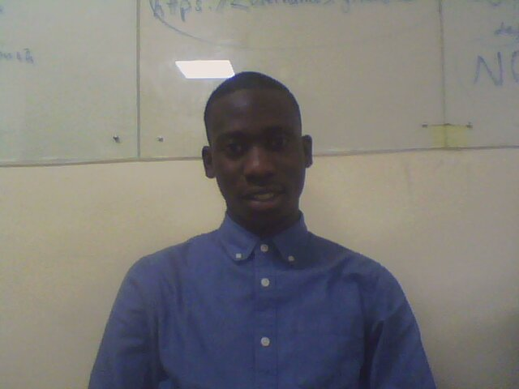

Hi, welcome to my portfolio web page.
I am a young man passionate about life and learning new ideas. We live in a
world that is contantly evolving. Therefore, I belive that life is a continuos learning
process. Consequently, I strive to learn new things with each new day, so that I can
make a difference in improving the status of my being and that of the people around me.

I went to Huduma school for my primary school education from the year
2002-2009.Afterwards, I went to Aquinas high school Nairobi for my secondary
school education for four years from 2010 and sat my national examinations
in 2013. I Excelled and joined Maseno University,Kisumu to pursue a degree in
mathematics and Economics with IT.Am now in my final year awaiting graduation
come the end of the year.I recently joined moringa school for my professional
course in programming.
I worked at four points by Sheraton Nairobi, formerly Best western premier Nairobi,
for four months as from May 2016 up to August 2016. During this period I worked
as a trainee at the finance and the IT departments.
At the finance department my duties were as follows:
At the IT departments my duties were:
I enjoy watching football, listening to music, watching movies and visiting new places.
My skills include; solving mathematical problems, handling data, playing football and
sprinting sports.
The following is a list of programming projects that I have done so far during this short period;
This the project was about creating my first webpage ever. I used HTML programming language to create the Webpage